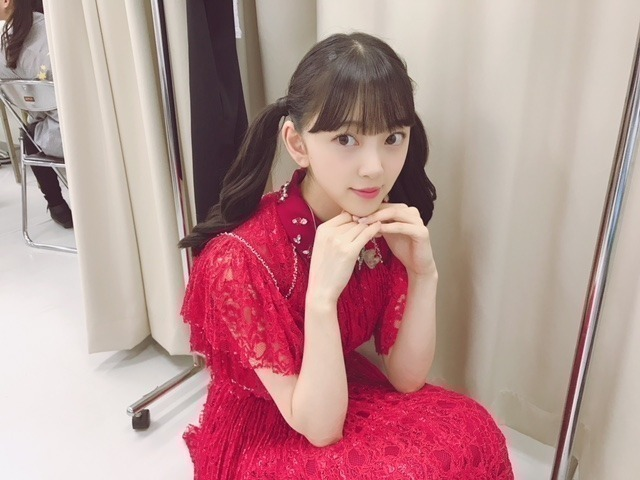

2018/0724Tueポニーテール♪
ついに今年も
真夏の全国ツアーが始まりました！！
夏〜
今回は初めてのドームツアーです！
福岡の初日を終えましたが
今回のライブでね、
「ジコチュープロデュースコーナー」
があって、自分の好きなように1曲丸々
プロデュースできちゃうのですが
私は福岡でシークレットグラフィティを
披露させていただきました♡
歌詞もMVもダンスも
世界観がすっごく好きだったので
披露できて幸せでした。
コメディミュージカル風で
みんなが男装をしたお客さん役をしてくれて
本当にかっこよくて。笑
2期と3期でやらせていただいたのですが
リハからわいわい笑って、楽しかったです。
歌詞中に「ポニーテールが目印〜」
って出てくるのですがあいにくわたしは今
ショートボブなのでこのシーグラの為に
急遽エクステをつけて出たの！
びっくりしたかな？
もう外しちゃうけど福岡限定だったので
楽しんでいただけたら
良かったです。
2日目は絢音とお揃いでツインにした〜


リハ着も髪型も似てた。

耳横で結んで
たてに巻いて、前髪はぱっつん！
いくちゃんとれんかに
ツイン似合うっていう
お褒めの言葉いただいたから
この日はルンルンルンだったの♪笑

久しぶりのロング
楽しめました〜。
しかし、
暑いね、、、溶けそう、、
熱中症にはお気をつけください！

名古屋
大阪
仙台の皆さん、待っとってねo(･x･)/
じゃね。
2018/07/24 11:48
コメント(570)
福岡ライブお疲れ様です！！
初めてライブに行かせていただきました。堀ちゃんのハーフツインかわいかったあああ。
タオルとかサイリウムみえたのかな？？アリーナからの観戦でした。近くに来た時やっぱり可愛さが爆発してました。
これからも暑さに負けず可愛さ満載の堀ちゃんで頑張ってください！！大好きです！応援してます！！！
話が変わりますが、岐阜 猛暑で大変らしいね。
実家は大丈夫？？
お仕事大変だと思うけど、熱中症だけにはきをつけてね！！。
ブログありがとう。今日も可愛かったよ。 559763
559763
初めてライブに行かせていただきました。堀ちゃんのハーフツインかわいかったあああ。
タオルとかサイリウムみえたのかな？？アリーナからの観戦でした。近くに来た時やっぱり可愛さが爆発してました。
これからも暑さに負けず可愛さ満載の堀ちゃんで頑張ってください！！大好きです！応援してます！！！
話が変わりますが、岐阜 猛暑で大変らしいね。
実家は大丈夫？？
お仕事大変だと思うけど、熱中症だけにはきをつけてね！！。
ブログありがとう。今日も可愛かったよ。
久々の投稿失礼します！
福岡お疲れ様でした！
あれ、雰囲気違うなっとおもったら
エクステだったんすね！
めちゃ似合ってましたよ！
メンバープロデュースにわくわくドキドキ
しながら
シークレットグラフィティー来たときは
もー叫んじゃいましたねw
めちゃかわいくて、もーとにかく見とれてました
これから名古屋、宮城と
参加する予定なので
また未央奈さん見るのが楽しみです！
コメント長い間すみませんでした～
頑張ってくださいね！
ちなみに、理想はどの程度高いんですか？w
福岡お疲れ様でした！
あれ、雰囲気違うなっとおもったら
エクステだったんすね！
めちゃ似合ってましたよ！
メンバープロデュースにわくわくドキドキ
しながら
シークレットグラフィティー来たときは
もー叫んじゃいましたねw
めちゃかわいくて、もーとにかく見とれてました
これから名古屋、宮城と
参加する予定なので
また未央奈さん見るのが楽しみです！
コメント長い間すみませんでした～
頑張ってくださいね！
ちなみに、理想はどの程度高いんですか？w
未央奈かわいすぎぃー
俺も行きたかった…
いつかは乃木坂が大好きな親友といっしょにライブに行くのが目標。
もしも行けたときには最初から最後までクライマックスだぜ!!
いつかは乃木坂が大好きな親友といっしょにライブに行くのが目標。
もしも行けたときには最初から最後までクライマックスだぜ!!
堀ちゃんブログ更新ありがとう^ - ^
真夏の全国ツアー福岡公演お疲れさまです。
ジコチュープロデュースの「シークレットグラフィティー」、めっちゃ面白そう！見てみたかったなぁ...
ツインもストレートもかわいい♡
でも髪長いと余計に暑いよね...
無理はせず体調管理には気をつけてください(*´-`)
感想遅くなっちゃったけど、「ジコチューで行こう」のMV見ました✨
アジアンな夏っぽさ全開でめっちゃよかった〜
堀ちゃんと生ちゃんのツーショットもめっちゃかわいかったです^ - ^
乃木中も、みなみおなが可愛かったし、なんか次回予告で堀ちゃんぽいモノマネをみり愛ちゃんがしてたから、楽しみ 笑
暑さに負けず頑張ってなぁー
では。
真夏の全国ツアー福岡公演お疲れさまです。
ジコチュープロデュースの「シークレットグラフィティー」、めっちゃ面白そう！見てみたかったなぁ...
ツインもストレートもかわいい♡
でも髪長いと余計に暑いよね...
無理はせず体調管理には気をつけてください(*´-`)
感想遅くなっちゃったけど、「ジコチューで行こう」のMV見ました✨
アジアンな夏っぽさ全開でめっちゃよかった〜
堀ちゃんと生ちゃんのツーショットもめっちゃかわいかったです^ - ^
乃木中も、みなみおなが可愛かったし、なんか次回予告で堀ちゃんぽいモノマネをみり愛ちゃんがしてたから、楽しみ 笑
暑さに負けず頑張ってなぁー
では。
素直に一言いいます。
あなたは女神様ですか？
あなたは女神様ですか？
未央奈かわいいすき
みお＼(^o^)／お疲れ様でした
シーグラみたかったなあ(｡>﹏<｡)
でも、シーグラのためにエクステ付けたって、さすがみおだな。
1年間、なんかいエクステ付けたかな？（笑）
写真全部可愛いな(*´ω｀*)ありがとう
そして、ツインに褒められてるんるんになるみお可愛い(*´ω｀*)
これからも頑張って(/･ω･)/
シーグラみたかったなあ(｡>﹏<｡)
でも、シーグラのためにエクステ付けたって、さすがみおだな。
1年間、なんかいエクステ付けたかな？（笑）
写真全部可愛いな(*´ω｀*)ありがとう
そして、ツインに褒められてるんるんになるみお可愛い(*´ω｀*)
これからも頑張って(/･ω･)/
名古屋の全ツのときに、1つのブログ丸々岐阜や名古屋のことについて書いてほしいな～
この夏の岐阜のオススメスポットとか、お店とか教えてほしいな～
もうすぐ、長良川の花火大会やおね？
みおな見に行く？？
この夏の岐阜のオススメスポットとか、お店とか教えてほしいな～
もうすぐ、長良川の花火大会やおね？
みおな見に行く？？
すっぴんかわいいかよ！
ブログ更新ありがとうございます
ボブでもロングでもやっぱり1番可愛いです！
ツアー大変ですが、暑さに気をつけてくださいね！
未央奈ちゃんブログ更新ありがとう！♡
いよいよ全国ツアー始まったね！
未央奈ちゃんのシークレットグラフィティー見たかった、、( ; _ ; )
この曲のためにエクステもつけたんだよね、ほんとにすごい！！未央奈ちゃんのそういう所大好き☺︎︎
絢音ちゃんとお揃いでツインしてたんだ！
もう当分ツイン見れないかなって思ってたから久しぶりに見れて嬉しい！♡♡ やっぱりめっちゃ似合ってる♡
未央奈ちゃんもまたこれから普段のお仕事もリハーサルも忙しいと思うから、体調気を付けてね！
大阪2日目行きます！☺︎︎
未央奈ちゃんカラーのサイリウムめっちゃ振るね！！
楽しみにしてる！♡
いよいよ全国ツアー始まったね！
未央奈ちゃんのシークレットグラフィティー見たかった、、( ; _ ; )
この曲のためにエクステもつけたんだよね、ほんとにすごい！！未央奈ちゃんのそういう所大好き☺︎︎
絢音ちゃんとお揃いでツインしてたんだ！
もう当分ツイン見れないかなって思ってたから久しぶりに見れて嬉しい！♡♡ やっぱりめっちゃ似合ってる♡
未央奈ちゃんもまたこれから普段のお仕事もリハーサルも忙しいと思うから、体調気を付けてね！
大阪2日目行きます！☺︎︎
未央奈ちゃんカラーのサイリウムめっちゃ振るね！！
楽しみにしてる！♡
未央奈更新ありがとう。
真夏の全国ツアー福岡お疲れ様！未央奈プロデュースのシークレットグラフィティー見たかったなー僕、九州出身だけど今東海地方まで来ているから行けなかったんだ 来年こそ行くぞ！
来年こそ行くぞ！
二日目は絢音ちゃんとお揃いでツインしていたんだね！二人とも可愛い でもやっぱり未央奈が可愛い久しぶりのロングいいね！ショートにしちゃってちょっと残念だったけど久しぶりに見るロングは惚れ直してまうわっと機動修正しまして（この話はここまでにして）
でもやっぱり未央奈が可愛い久しぶりのロングいいね！ショートにしちゃってちょっと残念だったけど久しぶりに見るロングは惚れ直してまうわっと機動修正しまして（この話はここまでにして）
未央奈の言うとうり暑いね、只今夏真っただ中なのでしょうがないかツアーまだまだこれからだけど未央奈も頑張って！後三会場だっけ熱中症のも負けず夏バテにも負けず頑張れ未央奈
ほなね～～
真夏の全国ツアー福岡お疲れ様！未央奈プロデュースのシークレットグラフィティー見たかったなー僕、九州出身だけど今東海地方まで来ているから行けなかったんだ
二日目は絢音ちゃんとお揃いでツインしていたんだね！二人とも可愛い
未央奈の言うとうり暑いね、只今夏真っただ中なのでしょうがないかツアーまだまだこれからだけど未央奈も頑張って！後三会場だっけ熱中症のも負けず夏バテにも負けず頑張れ未央奈
ほなね～～
大阪楽しみにしてる！
未央奈ちゃんいよいよ全国ツアー始まったね！
未央奈ちゃんセンターのシーグラ見たかったよおおおおお！最高じゃないか！
行きたかったあー
ジコチューのMVもすごく可愛くていい感じだよ。
未央奈ちゃんも熱中症対策万全に、夏のツアー乗り気ってね！応援してるよ。
大好き‼️
未央奈ちゃんセンターのシーグラ見たかったよおおおおお！最高じゃないか！
行きたかったあー
ジコチューのMVもすごく可愛くていい感じだよ。
未央奈ちゃんも熱中症対策万全に、夏のツアー乗り気ってね！応援してるよ。
大好き‼️
みおなーツインテールめっちゃ可愛い❤️
ライブめっちゃ良かったよー
また今度見に行くね❤️❤️❤️❤️❤️❤️❤️
ライブめっちゃ良かったよー
また今度見に行くね❤️❤️❤️❤️❤️❤️❤️
堀ちゃんはやっぱり王道のアイドルの髪型が似合うなー！
可愛いからなんでも似合うけどね^_^
可愛いからなんでも似合うけどね^_^
みおなのロングだいすき！またしてほしい！！
ライブお疲れ様！ポニーテールもツインの姿も生で見れてうれしかったー！暑いから体調気をつけてね！
ポニテみおな超かわいかった！
写真見たかったな〜
全ツ福岡だけしか行けないけど残りのとこもがんばってね！
写真見たかったな〜
全ツ福岡だけしか行けないけど残りのとこもがんばってね！
福岡お疲れさま!!2日目行ったよ!!
ツインの末央奈、めちゃくちゃ最高だった!!
「そんなバカな」のときの変顔も最高だった!!
まだまだツアー続くけど、頑張って!!
九州から応援してまーす!!
ツインの末央奈、めちゃくちゃ最高だった!!
「そんなバカな」のときの変顔も最高だった!!
まだまだツアー続くけど、頑張って!!
九州から応援してまーす!!
応援してます〜
みおなー！！！！！！！！
ツインテールめちゃめちゃ似合ってます！ショートの頃もよかったけどロングも好き
暑さに負けないようにがんばって！
暑さに負けないようにがんばって！
ロングの未央奈もやっぱ良いね！！
2期同士仲良いよね！
特に絢音とか蘭世とか！！
笑いあってる姿がイメージできてこっちも楽しいよ！
ツアーはこれからも続くけど
頑張ってね！！
いつも応援してます！！
2期同士仲良いよね！
特に絢音とか蘭世とか！！
笑いあってる姿がイメージできてこっちも楽しいよ！
ツアーはこれからも続くけど
頑張ってね！！
いつも応援してます！！
ポニテもツインもどっちも可愛い
長居で未央奈に会えるのを楽しみにしてます。
どんな未央奈でも嬉しい
頑張ってください！
長居で未央奈に会えるのを楽しみにしてます。
どんな未央奈でも嬉しい
頑張ってください！
ブログ更新ありがとうございます✨
そして、福岡公演お疲れ様！！✨
ポニーテールの未央奈も可愛すぎる ❤
また、未央奈に会いたいから握手会行くね！！
その時はよろしくです！！✨✨
あ、体調管理には気おつけてね！！
また、ブログ更新楽しみにしてます！！✨
( o≧д≦)oｶﾞﾝﾊﾞﾚｰ!!未央奈❤
そして、福岡公演お疲れ様！！✨
ポニーテールの未央奈も可愛すぎる ❤
また、未央奈に会いたいから握手会行くね！！
その時はよろしくです！！✨✨
あ、体調管理には気おつけてね！！
また、ブログ更新楽しみにしてます！！✨
( o≧д≦)oｶﾞﾝﾊﾞﾚｰ!!未央奈❤
福岡ヤフオクドームお疲れ様でした。(≧∀≦)
ツインテール観たかった。（残念）
写メありがとうございます。とてもかわいい❤️
大阪と名古屋は参戦しまーす。
よろしくお願いしまーす。
大好きです。❤️
ツインテール観たかった。（残念）
写メありがとうございます。とてもかわいい❤️
大阪と名古屋は参戦しまーす。
よろしくお願いしまーす。
大好きです。❤️
お疲れ様です!
ショートカット大好き星人なのですが、未央奈は長いのも似合うからどっちも好きだー
福岡限定ってことはもう見られないのですね、残念☠️
福岡限定ってことはもう見られないのですね、残念☠️
福岡公演お疲れ様でした！！
ツインテ未央奈ちゃん可愛い♡
生で見れなかったのが悲しみの極みです（笑）
大阪公演めちゃめちゃ楽しみにしてます♡
どんな未央奈ちゃんが見れるのかな！！
未央奈ちゃんの推しタオル持っていきます！
見つけてね！（笑）
スキィィィィィ！
ツインテ未央奈ちゃん可愛い♡
生で見れなかったのが悲しみの極みです（笑）
大阪公演めちゃめちゃ楽しみにしてます♡
どんな未央奈ちゃんが見れるのかな！！
未央奈ちゃんの推しタオル持っていきます！
見つけてね！（笑）
スキィィィィィ！
名古屋で待っとるよ~(^^)
私にとっての堀さんは、ショートとロングの変わり方が激しくて、髪型が色々なパターンを見られるので、相手を飽きさせないというか、魅力が尽きない人物です。
いつまでも追い続けたくなる存在。永遠の憧れ。
いつまでも追い続けたくなる存在。永遠の憧れ。
ライブお疲れ様！
チェックのワンピース聴いてください
チェックのワンピース聴いてください
未央奈ちゃんブログ更新ありがとう！
初めてブログにコメントさせていただきます！
残念ながら私は福岡公演に参加できませんでした…
ジコチュー企画でシークレットグラフィティーをエクステを付けてまでポニーテールにして披露とのことでポニーテール女子がとても好きなので見れなくてとても残念です。私が初めて握手会に行った時には未央奈ちゃんツインテールしてたのにブログに載せていたマーマレード・ボーイの光希ちゃんを真似てポニテにしてた時の髪型を褒めてしまいましたw
それと21枚目に絢音ちゃんが選抜に入ったので今回のブログみたいに仲のいい絢音ちゃんとの写真が多くなるのかなって思うと凄く嬉しいです^^*
最近本当に猛暑が続いているので未央奈ちゃんも体調に気をつけてください(*^^*)
初めてブログにコメントさせていただきます！
残念ながら私は福岡公演に参加できませんでした…
ジコチュー企画でシークレットグラフィティーをエクステを付けてまでポニーテールにして披露とのことでポニーテール女子がとても好きなので見れなくてとても残念です。私が初めて握手会に行った時には未央奈ちゃんツインテールしてたのにブログに載せていたマーマレード・ボーイの光希ちゃんを真似てポニテにしてた時の髪型を褒めてしまいましたw
それと21枚目に絢音ちゃんが選抜に入ったので今回のブログみたいに仲のいい絢音ちゃんとの写真が多くなるのかなって思うと凄く嬉しいです^^*
最近本当に猛暑が続いているので未央奈ちゃんも体調に気をつけてください(*^^*)
未央奈ブログ更新ありがとう！
福岡お疲れ様！！俺も行きたかった〜
ポニテ未央奈も超いいね！似合ってるよ！
大阪は両日とも参戦するから待っててね！
福岡お疲れ様！！俺も行きたかった〜
ポニテ未央奈も超いいね！似合ってるよ！
大阪は両日とも参戦するから待っててね！
みおなー
大阪ライブいくでー
今から楽しみすぎて待ちきれん（≧∇≦）
可愛い未央奈を見るのが楽しみやー
大阪ライブいくでー
今から楽しみすぎて待ちきれん（≧∇≦）
可愛い未央奈を見るのが楽しみやー
お疲れ様
はい。ロング未央奈いただきました～
お礼といってはなんだが、これを。 (チョコ)
(チョコ)
はい。ロング未央奈いただきました～
お礼といってはなんだが、これを。
どんな髪型でも似合うね！
可愛い
可愛い
みおちゃん こんにちは！
こんにちは！
ブログ更新ありがとう＼(^o^)／
福岡ドーム2日間お疲れさまでした
ツインテールみおちゃん似合ってて
とってもカワイイよ

暑い日が続いてるけど
水分と塩分補給を忘れずに
体調に気を付けてね
ブログ更新ありがとう＼(^o^)／
福岡ドーム2日間お疲れさまでした
ツインテールみおちゃん似合ってて
とってもカワイイよ
暑い日が続いてるけど
水分と塩分補給を忘れずに
体調に気を付けてね
未央ちゃんこんにちはんばーーぐ
観たかったなぁーっ…そのぶん名古屋と仙台楽しまなきゃ！待ってるね
ロング未央奈綺麗！！可愛いと綺麗をあわせ持ってる女性って凄く素敵だと思う。熱中症に気をつけて今日も頑張ろうね
観たかったなぁーっ…そのぶん名古屋と仙台楽しまなきゃ！待ってるね
ロング未央奈綺麗！！可愛いと綺麗をあわせ持ってる女性って凄く素敵だと思う。熱中症に気をつけて今日も頑張ろうね
ほりっぴー、こんばんは！orこんにちは！
今日も一日お疲れ様！
福岡公演お疲れ様でした。
堀さんが大好きな明太子たくさん食べれましたか？(*^^*)
堀さんと絢音さんコンビといえは、先日発売されたEX大衆の対談を読みました。
二人の関係性がよく分かって面白い記事でした(*^^*)
p.s.
いつもブログ更新ありがとう☆
今日も一日お疲れ様！
福岡公演お疲れ様でした。
堀さんが大好きな明太子たくさん食べれましたか？(*^^*)
堀さんと絢音さんコンビといえは、先日発売されたEX大衆の対談を読みました。
二人の関係性がよく分かって面白い記事でした(*^^*)
p.s.
いつもブログ更新ありがとう☆
今日も更新ありがとう！
久しぶりのコメントになっちゃってごめんね…
すごく忙しくて色んなことに追われて、重圧に耐え切れなくて
うわーってなったりしてました。
そんな時に、全然私なんかより大きな重圧を背負わなければいけなかったみおなのこと、そして今笑顔でそれを背負った上で私たちにパワーをくれるみおなのことを考えて、元気をもらいました！
同い年なのに比べ物にならないほど色んなものを背負って頑張っていて、でもそれを見せずにキラキラしてるみおなが本当に大好きです。
いつも本当にありがとう！
応援しています。
p.s.いつの間にか生ちゃんて呼ぶようになってたんだ！バレンタインで仲良くなりたいって言ってたけどなれたのかな(^^)？
最後のすっぴんぽい写真はちょっと昔のみおなぽくて可愛い！
久しぶりのコメントになっちゃってごめんね…
すごく忙しくて色んなことに追われて、重圧に耐え切れなくて
うわーってなったりしてました。
そんな時に、全然私なんかより大きな重圧を背負わなければいけなかったみおなのこと、そして今笑顔でそれを背負った上で私たちにパワーをくれるみおなのことを考えて、元気をもらいました！
同い年なのに比べ物にならないほど色んなものを背負って頑張っていて、でもそれを見せずにキラキラしてるみおなが本当に大好きです。
いつも本当にありがとう！
応援しています。
p.s.いつの間にか生ちゃんて呼ぶようになってたんだ！バレンタインで仲良くなりたいって言ってたけどなれたのかな(^^)？
最後のすっぴんぽい写真はちょっと昔のみおなぽくて可愛い！
初ライブほんとに楽しかった！！！
ありがとう！！
乃木坂愛がさらに増した！
これからもずっと応援するから頑張って！
ありがとう！！
乃木坂愛がさらに増した！
これからもずっと応援するから頑張って！
みおなめっちゃめちゃかわいい✨
そうだ！！
あと書き忘れてた！
けやき坂46のこさかなちゃんがブログでみおなのことすごい褒めてて、声をかけてくださって嬉しいって言ってたよ！
好きな人が好きな人のこと好きって言ってるとすごい嬉しかった(^^)
よかったら見てみてください！確か7/17？の記事かな！
あと書き忘れてた！
けやき坂46のこさかなちゃんがブログでみおなのことすごい褒めてて、声をかけてくださって嬉しいって言ってたよ！
好きな人が好きな人のこと好きって言ってるとすごい嬉しかった(^^)
よかったら見てみてください！確か7/17？の記事かな！
ロングもめっちゃ似合ってる...
福岡2日間本当にありがとう！
ポニテ見ることができてよかった！
とても暑い日が続くけど、暑さに負けず残りのライブ頑張って、そして楽しんで！
また福岡きてな！
ポニテ見ることができてよかった！
とても暑い日が続くけど、暑さに負けず残りのライブ頑張って、そして楽しんで！
また福岡きてな！
ロングヘアー大好きです！！
でもどんなみおなちゃんでも大好き！！！
でもどんなみおなちゃんでも大好き！！！


シークレットグラフィティー見たかったぜ。。。
とりあえず大阪に向けコンディション整えながら僕も仕事とレコーディングと頑張ります！！